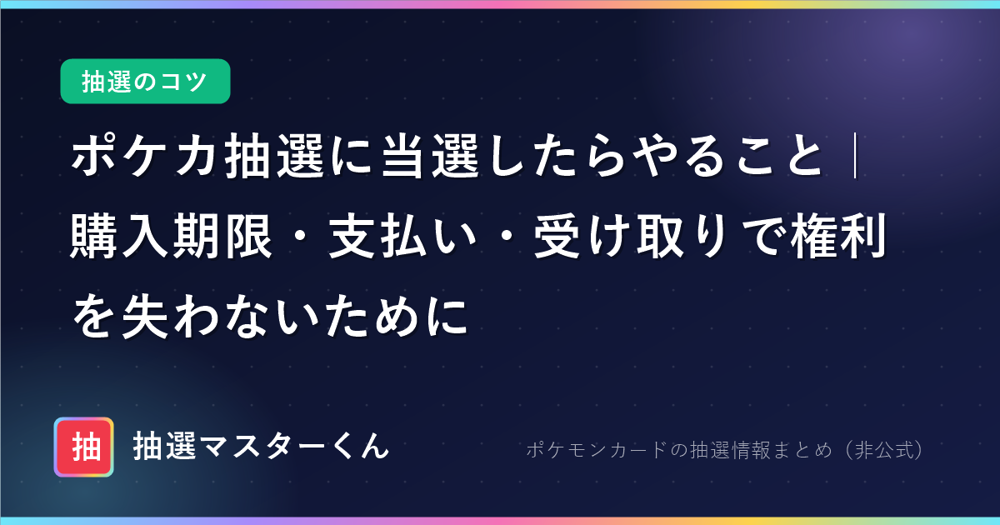

ポケカ抽選に当選したらやること｜購入期限・支払い・受け取りで権利を失わないために

倍率の高いポケカ抽選に当たったら、まずはひと安心…と言いたいところですが、当選後の手続きを忘れて権利を失う人は少なくありません。当選したらやることを順番にまとめます。
1. 当選メール・アプリの通知をすぐ確認する
- 結果はメールやアプリの通知で届くことがほとんどです。迷惑メールフォルダに入っていないかも確認しましょう
- メールに書かれた購入期限・受け取り期限は、必ずカレンダーやスマホのリマインダーに入れておきます
- 「当選しました」を装った偽メールにも注意してください。URLを開く前に、送信元が本当にその店舗かを確かめましょう
2. 期限内に購入・支払いを済ませる
通販の抽選では、当選者だけが買える購入期間が決まっていることが多いです。例えば2026年11月の楽天ブックスの抽選では、当選者の購入期間が11月29日〜12月3日と決まっていました。期間を過ぎると、当選は無効になります。
支払い方法がクレジットカードのみの抽選もよくあります。カードの有効期限や利用枠も、事前に確認しておきましょう。
3. 店頭受け取りの場合は、持ち物と期間を確認
- 店頭での受け取りは、受け取り期間と時間が決まっています
- 当選画面の提示、会員証、本人確認書類などが必要な場合があります
- 応募した店舗でしか受け取れないことがほとんどです
4. 配送先は変更できないことがある
通販の抽選では、応募時に登録した住所にしか送れないことがあります。引っ越しの予定がある人は、応募の前に登録情報を確認しておきましょう。
5. 届いたら中身を確認する
- 商品が届いたら、外箱やシュリンク（透明フィルム）に破れがないか確認します
- 問題があれば、開封する前に販売店に連絡しましょう
当選後に気をつけたいこと
抽選の多くは、転売目的の購入を禁止しています。転売が疑われると、次回以降の抽選に参加できなくなることもあります。自分で楽しむ分だけを買いましょう。
次の抽選に向けた準備は、「応募したのに無効」を防ぐ7つのチェックポイントもあわせてどうぞ。
当サイトは非公式のファンサイトです。価格・日程などは記事公開時点の情報なので、最新の情報は公式サイトや各販売店でご確認ください。